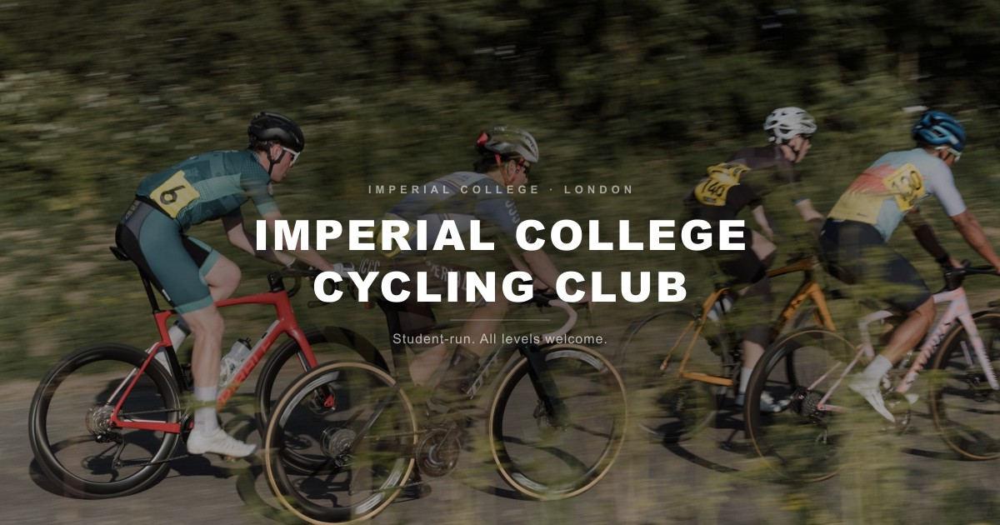
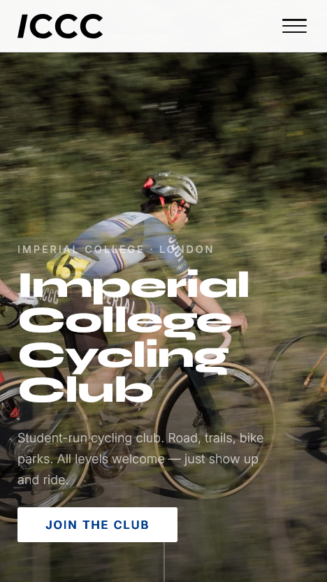

The ICCC website has a new design. Here’s what changed and why.

What’s New
A proper visual identity. New logo, consistent typography (Syne for headings, Inter for everything else), and Imperial Blue.
Separate sections for road, off-road, and everything else. Because MTB riders are very different people who happen to own similarly expensive bikes.
A blog and news hub. You’re reading it right now. Posts on training, gear, bike setup, and club life — written by members, for members. The hub also feeds live into the main site, so the homepage always shows what’s current.
Mobile-first layout.

Why Bother?
Clubs live and die by their visibility. A good website doesn’t just inform — it sets a tone. It tells a prospective member: this club takes itself seriously, but not too seriously. It says: yes, we race, but we also just enjoy riding bikes around London and talking about it afterwards.